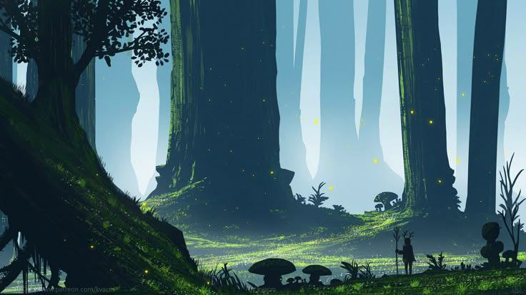
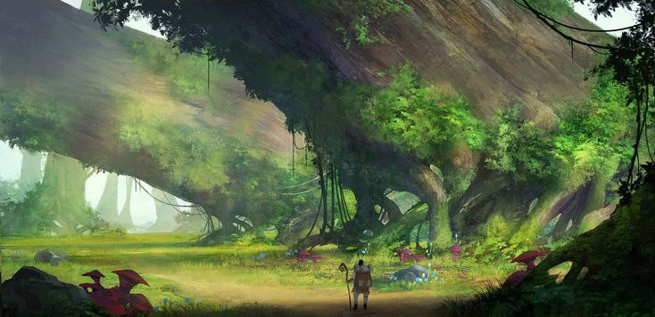
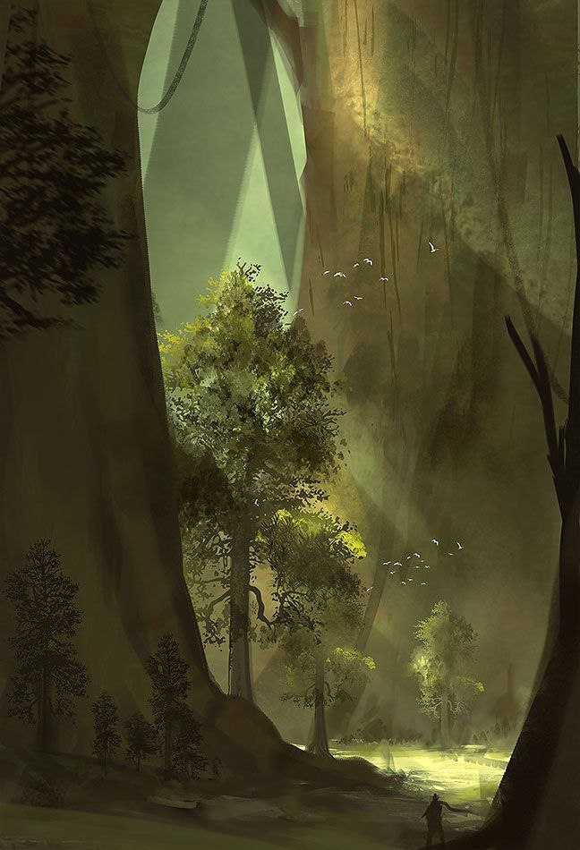

В отличие от более строгого и рельефного верхнего леса, Титанов лес нижний раскинулся на пологих равнинах. Здесь меньше оврагов и крутых холмов — дорога мягко вьётся между гигантскими деревьями, создавая ощущение простора и покоя. Деревья в нижнем лесу столь же исполинские, как и в верхнем: необъятные дубы, клёны и буки, тянущие свои ветви к небу, создают свод, под которым легко теряется чувство масштаба. Среди них всё ещё встречаются и хвойные великаны, особенно по мере приближения к северной части, но в целом лес более разнообразен и красочен.
Титанов лес нижний

Добро пожаловать в Титанов лес нижний!
Титанов лес нижний — это просторная, величественная чаща, раскинувшаяся к югу от сурового верхнего Титанового леса. Здесь становится теплее, мягче и светлее: вместо строгих хвойных стен — живописные дубравы и лиственные перелески, наполненные золотым светом, проникающим сквозь разреженные кроны. В этом лесу холодная мощь природы сочетается с её тёплой, умиротворяющей стороной, а не доминирует над ней.
Природа

Обитатели

Животный мир нижнего леса схож с тем, что обитает в верхнем: волки, медведи, медвесычи, лисицы, олени, землерыси и прочие звери бродят среди кустов . Мелкая живность также суетится в подлеске — от беломехов и рогатых зайцев до рогоклыков и темных ежей. Одним из главных отличий нижнего леса от верхнего остаются титаны. Здесь они менее замкнутые и дикие, и гораздо более доброжелательные к другим расам. Живя в больших семейных группах, они не так сильно стремятся уединяться и порой даже обмениваются дарами с путешественниками или охотниками, прошедшими через лес с уважением.
Эльфийский переход

Среди древних деревьев нижнего леса скрывается одна из его величайших загадок — Эльфийский Переход — огромный подземный тоннель, ведущий к озеру Тихому. Построенный в незапамятные времена, он проложен глубоко под землёй, с массивными арками и следами старой каменной кладки. Считается, что его создали либо древние титаны, либо эльфы, чтобы проложить путь под лесом — укрытый, надёжный и быстрый.
Подводя итоги
Если верхний Титанов лес внушает благоговение своей мрачной мощью, то нижний — согревает. Это место всё ещё дикое и полное необузданной силы, но оно встречает не холодом, а тишиной и терпением. Здесь хочется идти медленно, вдыхая запахи листвы и мха, слушая шорох ветра в высоких кронах. Нижний лес не менее древний, чем его северный собрат, но он — добрее и ближе к людям.